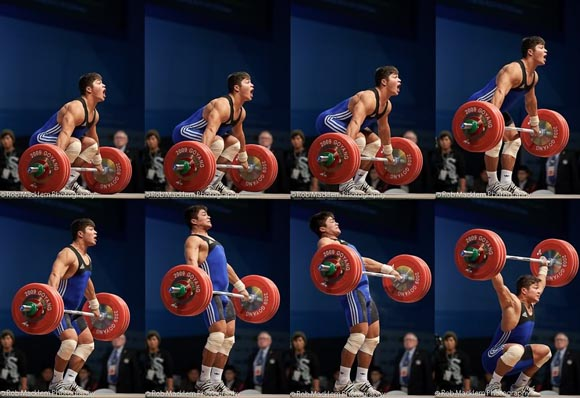

Snatch
The snatch is the first lift to be performed in a competition. This movement consists of several different phases, but the objective is to move the ground from the ground, to an overhead position in one smooth motion. The athlete must successfully perform the movement and hold the bar steady until the judges declare that the lift is valid. The phases include:
- The Setup
This is the phase in which the athlete starts. The setup position will vary from athlete to athlete based on both preference, and anatomy.
- The Pull
This step is actually divided in 3 phases known as the first, second, and third pull. In this step, the athlete will pull the bar up maintaing a vertical bar path. Once the bar is above the knees, the bar is violently accelerated through the extension of the ankles, knees, and hips leading to the athlete being on their toes. This phenomenon is known as triple extension.
- The Receive
Once the barbell has reached its maximum potential height, the athlete will quickly pull themselves underneath the barbell and lock the shoulders and elbows out. The athelete will be in a full squat position with a fully stable torso.
- The Stand
The final phase involves when actually standing when the athlete is in control of the bar. The athlete must then stand and steadily hold the bar until the lower command is given by the judges.
